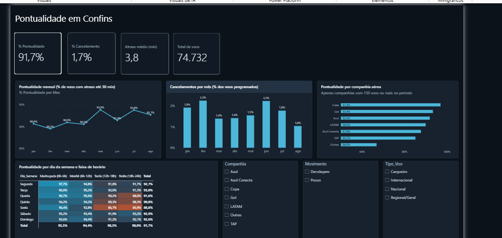

01
Pontualidade em Confins
ETL em Python + painel em Power BI · dados abertos da ANAC
- Pergunta
- Quando e por que os voos atrasam no Aeroporto de Confins?
- Base
- VRA da ANAC, 8 arquivos mensais, jan–ago/2026
- Volume
- 74.732 voos tratados
A base da ANAC traz uma linha por trecho A→B e nenhuma métrica calculada. O pipeline em pandas muda a perspectiva para movimento em Confins — partida quando o aeroporto é origem, chegada quando é destino — calcula o atraso e aplica o critério oficial de 30 minutos. Cancelados e voos extras ficam fora do denominador, não contados como atraso.
91,7%Pontualidade
1,7%Cancelamento
3,8 minAtraso médio
O padrão mais forte é o acúmulo ao longo do dia: 95,5% na madrugada contra 90,0% à noite. O pior ponto da semana é sexta à tarde, com 86,7%.
- Python
- pandas
- Power BI
- DAX
- Modelo estrela
- PBIP

Página principal do relatório no Power BI